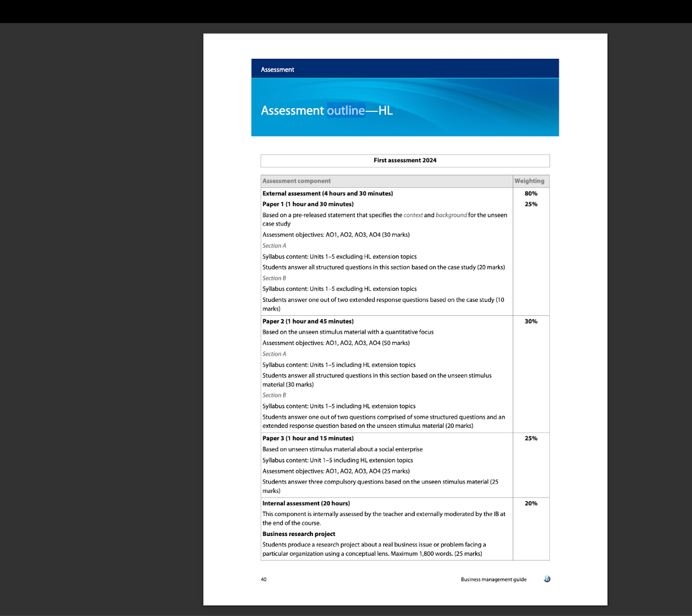

Course guide
Introduction
BM Concepts and EE and IA and Paper 1, 2 and 3
Concepts -
Through the exploration of four interdisciplinary concepts—creativity, change, ethics and sustainability
—this course empowers students to explore these concepts from a business perspective.
Task 3
- Reflect upon the meaning of the 4 words by reading the below definitions for next 5 minutes. If you do not understand the meaning of any, look it up online, read it and if you still have issues, ask me.
- Now think about the businesses you see around yourself, and tell me how do the 4 concepts you read about above are very important to a business. We shall discuss it.
- After discussion, lookup and give me a real life example of a company which failed because of failure of one of these concepts.
Glossary of Command Terms - AO meanings
AO groupings - 1, 2, 3 and 4 and Paper wise AO´s
Command terms Note
Students must be familiar with the command terms used at each assessment objective level
to understand the depth of treatment required in examination questions. Cognitive demands progress
from AO1 to AO3, while AO4 terms are specific to particular skills.
Examination questions may use any command term from the assessment objective level specified in the
“Syllabus content” section, or a less demanding command term from a lower level. For example, if the
assessment objective level for a topic is AO2, an examination question could contain any of the command
terms for AO2, such as “explain”, “distinguish”, and so on. Alternatively, the examination question could
contain a command term from AO1, such as “describe”. However, a more demanding command term, such
as “evaluate”, from a higher level (AO3 in this case) cannot be used.
The command terms used in each question, or part thereof, indicate the depth required. The command
terms are organized by assessment objective level in the “Assessment objectives” section earlier in the
guide and defined in the “Glossary of command terms” in the appendices.
Command terms - Understanding them through a Case study
Assessment Outline - Paper I, II, III - SL and HL ( More info on Assessment advice page)
HL - High Level

External Examinations HL and SL - Overview
SL
HL
Additional Guide on writing answers:
How to write an IB style essay type answer for BM (Format)
https://drive.google.com/file/d/1M3D5rWF3uSJHmCZSnWong1700wl2GmiN/view?usp=drive_link
The DEAD and the DEADER format for writing answers
https://docs.google.com/document/d/1seMI8JE7uD0mmDj602bp5Ew17RP7DdvZ/edit
How to Write Like an IB Business Analyst
AO wise Command terms and how to approach them to write your answers
General guidance on answer length, style and amount of time to dedicate for a question
2 markers - Generally speaking, for definitions, you want to keep this concise to two sentences. I recommend for the first sentence to highlight the key aspects/features of the BM terminology. Your second sentence can highlight the aim/purpose/intention of the said BM term. For example, if you are asked to define the term predatory pricing, your first sentence can highlight what predatory pricing is about. Second sentence can be something like "It aims to drive the competitors out of the market completely, but is often an illegal method". Giving a quick and small example wherever possible is also recommended.
2 marker questions can include other command terms, such as "describe, outline, etc.". For the other ones, I also recommend keeping your repsonse to 2 sentences long except if the question makes reference to the case name "e.g. "describe .... for Company X", then you might need to consider including a third sentence to show some application to the case.
4 markers - these are usually phrased using the "Explain" command term. So you probably want to structure this using the PEE+L structure for each of the "two" things you're asked in the question (e.g. explain one advantage and one disadvantage of .....). For your reference, P (point - e.g. the advantage point, which is often found in the textbook/notes), E (explain the point - usually the theory of what that point means), E (evidence/example - this means you need to explain the advantage or disadvantage point in relation to the case study), and I (impact to business - this is where you want to talk about how the advantage or disadvantage point has an impact to the business and/or its stakeholders).
6 markers - this is an extension of the 4 marker, so you might need to write maybe 1-2 sentences more per paragraph. Depending on what you're asked, it could structured as 2 paragraphs of 3 paragraphs (where you're asked three things, e.g. two advantages + one disadvantage). No conclusion is needed.
8 markers - these don't exist in IBDP BM, you wont get 8 markers.
10 markers - 6 paragraphs (intro, 4 body paragraphs and conclusion). Body paragraphs should be balanced (2 points for + 2 points against using application and analysis from the case study, structuring it the way how you do it for 4 marker responses). Conclusion must demonstrate clear evaluation (although this can also be done in your body paragraphs). Don't forget to integrate BMTs throughout your essay and if you're aiming for the top 9-10 markband, include explanations on limitations of the case study.
TIME BREAKDOWN BY MARKS
2-mark question (AO1 / AO2)
Ideal time: 2–3 minutes
What IB expects
- One clear definition OR
- Two brief points OR
- One explained point linked to the case
Student advice
- No introduction
- No conclusion
- No waffle
If you spend more than 3 minutes → you are overwriting.
4-mark question (AO2)
Ideal time: 4–5 minutes
What IB expects
- Two explained points
OR - One point well explained and applied to the case
Structure students should use
- Point
- Explanation
- Case link
No evaluation, no judgement.
6-mark question (AO2 / light AO3)
Ideal time: 6–7 minutes
What IB expects
- Two developed points
- Clear application to the case
- Logical structure
Student structure
- Paragraph 1: Point + explanation + case
- Paragraph 2: Point + explanation + case
Still not a full evaluation — balance but no final judgement needed.
10-mark question (AO3 – evaluation)
Ideal time: 10–12 minutes
This is where most students lose marks due to poor time management.
What IB expects
- Balanced arguments
- Case-specific analysis
- Clear judgement
Ideal structure
- Short intro (1–2 lines)
- Argument FOR (linked to case)
- Argument AGAINST (linked to case)
- Judgement (this is essential)
No judgement = capped marks.
12-mark question (AO3 – extended evaluation)
(Usually Paper 2 / Paper 3)
Ideal time: 12–15 minutes
What IB expects
- Depth + balance + synthesis
- Strong use of the case
- Explicit final recommendation
Structure students should follow
- Brief context
- 2–3 developed arguments
- Counter-arguments
- Clear final judgement/recommendation